Quickstart¶
Installing and Running RGA¶
The tool is available for download on the RGA GitHub releases page.
- Windows: use the .msi installer or .zip archive from. For Vulkan®, the installer would also install the RGA Layer and hence is the recommended option.
- Linux: use the .tgz archive.
To run the app, run the RadeonGPUAnalyzerGUI executable.
Startup dialog¶
The graphical user interface has been extended to support more than a single API, so you will now be prompted to select your default API of choice on startup. You can check the “Do not ask me again” check box to always launch the app in the desired mode.

Vulkan® Mode¶
The Home Page¶
Select Vulkan® as the API of choice on startup. Then, in the home page, we have two options for a start:
- Create a graphics pipeline
- Create a compute pipeline
Creating a Project¶
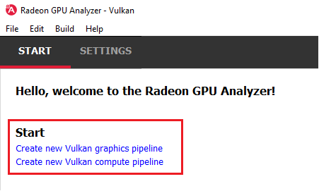{kind=link}
Let’s start by creating a graphics pipeline.
You will then be prompted for an optional rename of your project:

After the project is created, you can use this menu to add your shaders:
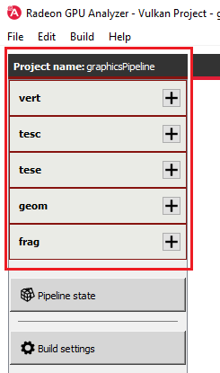{kind=link}
When adding a shader file, you have two options:
- Create a template GLSL file, auto-generated by RGA. This is a good option if you are interested in rapid prototyping and just want something that compiles to use as a base line.
- Add an existing SPIR-V binary or GLSL source file.
Let’s create template vertex and fragment shaders:
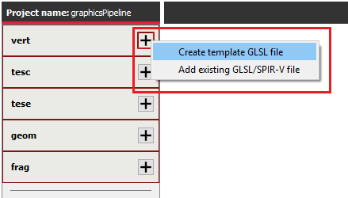{kind=link}
After creating/adding a file, you can edit the source code in the editor. This is true not only to GLSL textual code. It is possible to load a SPIR-V binary in RGA. If you do that, the binary would be disassembled, and you will be able to edit it as textual code. Upon compilation, RGA would reassemble the SPIR-V binary for you.
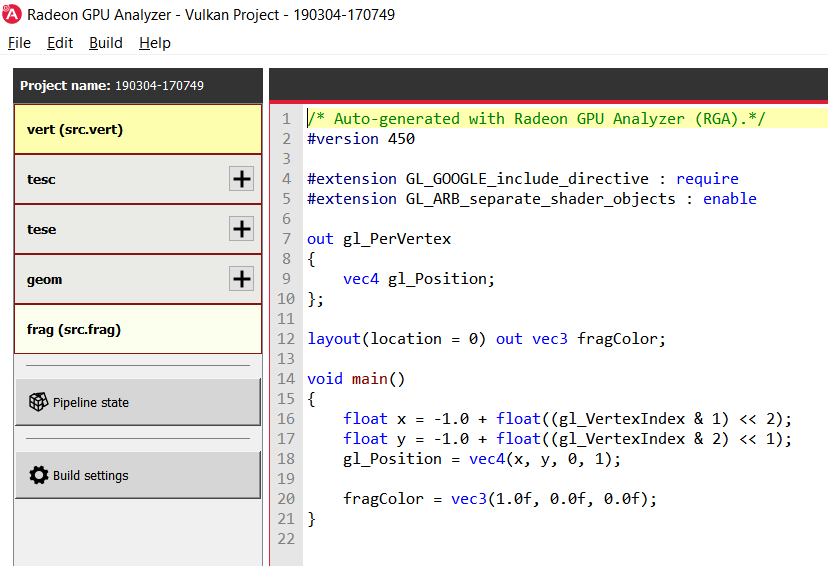{kind=link}
After we edited our shader source code, SPIR-V binaries or mix thereof, let’s make sure that the pipeline state matches our shaders. Clicking on Pipeline state would open the RGA’s pipeline state editor:
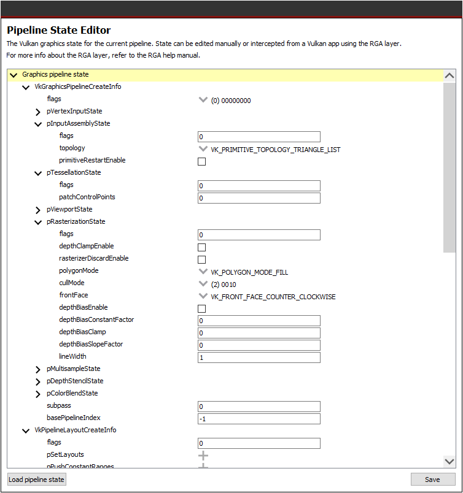{kind=link}
The editor provides a tree representation of the Vulkan® pipeline state, allowing the user to edit a graphics or compute pipeline’s creation parameters. Different sections are available to be configured within this view depending on the project’s pipeline type:
Graphics pipeline
- VkGraphicsPipelineCreateInfo
- VkPipelineLayoutCreateInfo
- VkDescriptorSetLayoutCreateInfo array
- VkRenderPassCreateInfo
Compute pipeline
- VkComputePipelineCreateInfo
- VkPipelineLayoutCreateInfo
- VkDescriptorSetLayoutCreateInfo array
One nice thing about this view is that it allows you to visually see the create info structure relationships within the Vulkan® pipeline state, which is sometimes hard to do from just looking at the flat Vulkan® spec.
You can use Ctrl+F to search the state:
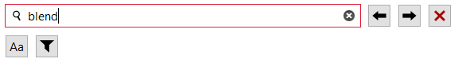{kind=link}
which would also scroll to the relevant occurrence:
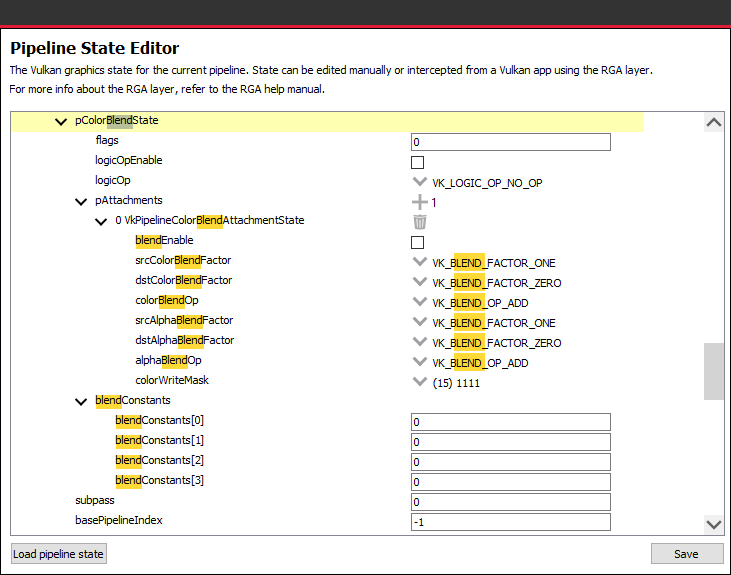{kind=link}
It is also possible to use the filter option while searching:
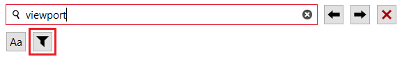{kind=link}
Searching with this option on would only show the relevant parts of the tree:

Another useful option is loading the pipeline state file. RGA stores the Vulkan® pipeline state in a JSON file:
- .gpso file for graphics pipelines, with a representation of VkGraphicsPipelineCreateInfo
- .cpso file for compute pipelines, with a representation of VkComputePipelineCreateInfo
These files can be serialized from your Vulkan® app in runtime using the RGA layer, a beta feature that ships with RGA 2.1. For more info about this feature, see the Vulkan® Help Manual section.
When you build your project with RGA, the tool spawns a Vulkan® app that accepts the JSON representation of your state (based on the values in the UI),
Generating Disassembly¶
After the pipeline state matches our shaders, let’s build the project:
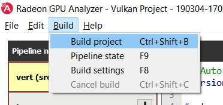{kind=link}
The compiler output can be viewed at the Build output pane at the bottom:
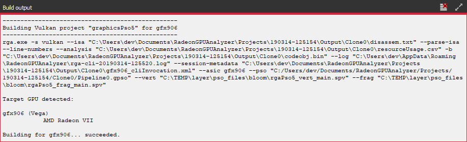{kind=link}
And, in case of a successful build, the disassembly and HW resource usage info would be shown on the right:
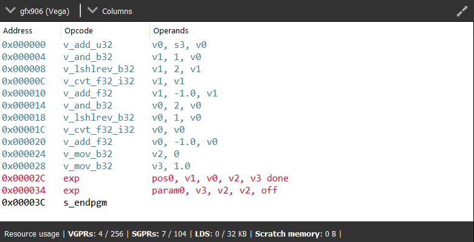{kind=link}
That’s it - we got our first Vulkan® pipeline built with RGA.
ROCm OpenCL™ Mode¶
The Home Page¶
Creating a Project¶
RGA Project is a vehicle that can contain any number of OpenCL™ source files (.cl), together with a set of build settings. When you build the project, the OpenCL™ source files are being compiled and linked together into a single HSA Code Object binary.
RGA will automatically create for you the project when you add or create a file in the Home Page.
To add an existing .cl source file, use Ctrl+O or click on “Open existing .cl file” under the Start section:

You can also do this by clicking on File -> “Open existing c.l file”:

In a similar way, you can create a project by creating an empty .cl file. Use the Ctrl+N shortcut or click on “Create new .cl file”.
You will then be prompted for an optional rename of your project:

RGA will use a yymmdd-hhmmss date-time string as a default name. Check the “Always use auto-generated project names” check box to instruct RGA to always use the default name without prompting for renaming.
Generating Disassembly¶
To build your project and generate the disassembly, use the Ctrl+Shift+B shortcut. Alternatively, you can use the Build -> Build project menu item:
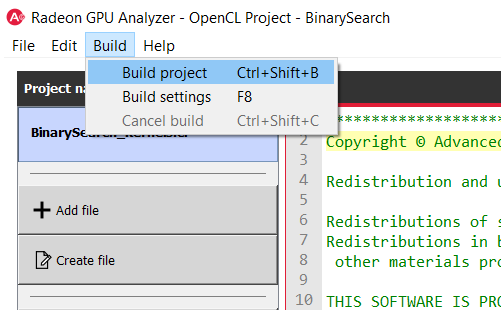{kind=link}
When a build is triggered, the rga command line tool will be invoked. The “Build output” window at the bottom will display the invocation command for the RGA command line tool, as well its output.
In case of a build success, the list of kernels in each file would be shown underneath each entry in the file menu on the left side.
Use that list to control which kernel is in focus (highlighted in yellow):
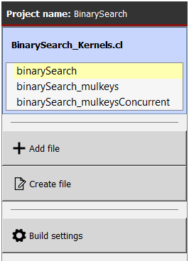{kind=link}
The disassembly for the relevant kernel will be displayed in the disassembly view on the right:

- Highlighted rows are correlated to the current line in the source code view on the left
- Memory instructions are colored in red to help you identify spots with high memory pressure
- The Columns drop-down menu at the top can be used to customize the presented columns
- If more than one GPU was targeted, use the drop-down on the top left corner to switch devices
- The resource usage line shows the GPU resources that are consumed by the presented code
In case of a performance hazard due to the usage of a GPU resource, RGA will display a warning icon and highlight the relevant resources:

The possible hazards are:
- VGPR spills
- SGPR spills
- LDS usage exceeds the recommended limit (based on the target GPU’s HW features)
- Scratch memory usage is non-zero
- The size of the code is larger than the instruction cache